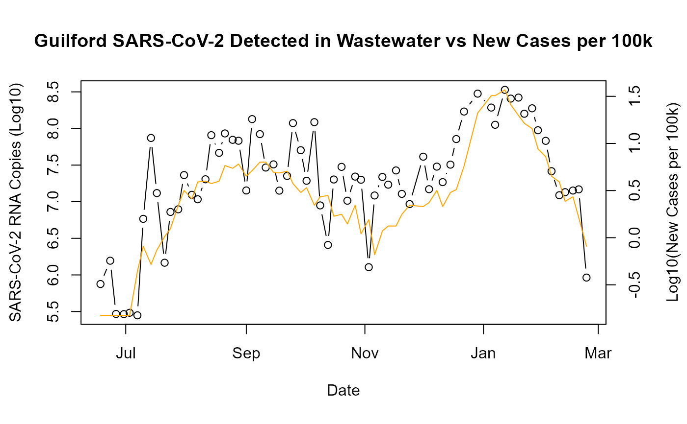

A helper function to pull SARS-CoV-2 Copies Detected in Wastewater
pull_wastewater(county_in = NULL)a string vector indicating the counties served
with a default of NULL returning all counties
raw_dat <- pull_wastewater(county_in = "Guilford")
raw_dat <- raw_dat[!is.na(sars_cov2_raw_copiesL)][,copies_log10 := log10(sars_cov2_normalized)]
par(mar = c(5, 4, 4, 4) + 0.3)
plot(copies_log10~date_new, data = raw_dat, type ="b",
xlab = "Date", ylab = "SARS-CoV-2 RNA Copies (Log10)")
par(new = TRUE)
plot(log10(cases_new_cens_per10k)~date_new, data = raw_dat,
type = "l", axes = FALSE, bty = "n", xlab = "", ylab = "", col = "orange")
axis(side=4, at = pretty(range(log10(raw_dat$cases_new_cens_per10k))))
mtext("Log10(New Cases per 100k)", side=4, line=3)
title("Guilford SARS-CoV-2 Detected in Wastewater vs New Cases per 100k")
